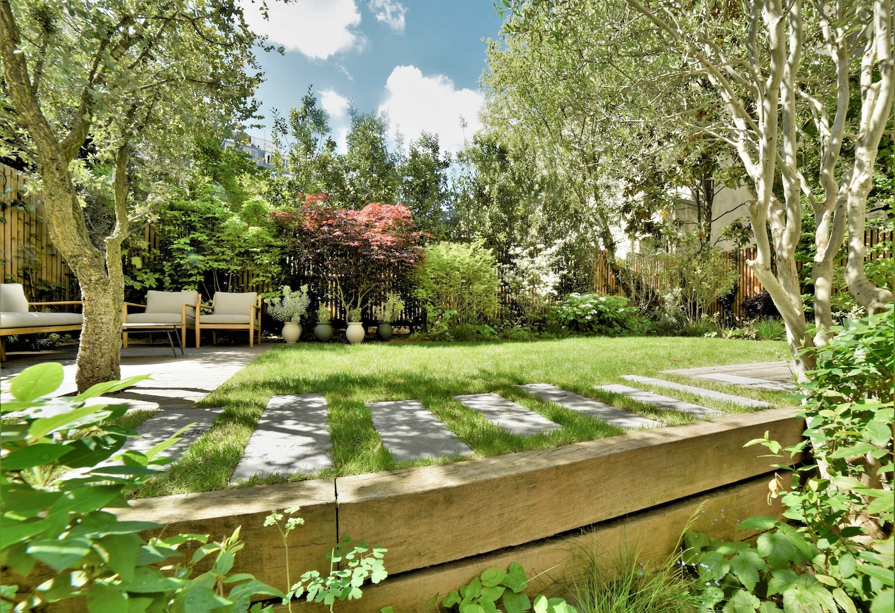

Paysagiste à Bouskoura & Casablanca
Votre jardin sur mesure,
de l’idée à la réalisation.
Création ou transformation de votre jardin : nous concevons votre aménagement, sélectionnons les végétaux et réalisons les travaux, selon vos envies et votre espace.
Basés à Bouskoura, nous intervenons à Casablanca et dans les environs.
Découvrir nos réalisations
Notre accompagnement pour votre jardin
Un jardin sur mesure
Votre espace, vos envies, notre créativité.
Le bon végétal
Le savoir-faire de notre pépinière au service de votre jardin.
À vos côtés, de A à Z
De la première idée aux dernières plantations.
Du projet au jardin
Des jardins qui prennent vie.
Découvrez une sélection de nos réalisations à Bouskoura.
.jpeg)
.jpeg)
.jpeg)
Comment ça se passe
Un projet clair, à chaque étape.
Quatre étapes, un accompagnement attentif.
Échange & découverte
Vous partagez vos envies, votre espace et vos priorités. Nous définissons ensemble les premières idées.
Conception paysagère
Nous imaginons un aménagement adapté à votre terrain, à votre architecture et à votre budget.
Préparation & réalisation
Après votre validation, nous préparons le terrain, réalisons les aménagements et installons les végétaux.
Livraison de votre jardin
Nous soignons les finitions et vous accompagnons pour prendre soin de votre nouvel espace.
Tres belle réalisation avec Mr salah. Très serviable et attentif. Respect des délais et prestations à la hauteur.
Votre projet commence ici
Parlons de
votre futur jardin.
Indiquez vos coordonnées et le type d’aménagement souhaité. Quelques photos peuvent nous aider à mieux comprendre votre espace.
Après un premier échange et, si nécessaire, une visite sur place, nous vous proposons une solution adaptée à vos besoins et à votre budget.
Questions fréquentes
Quels types de jardins VERDESIA réalise-t-elle ?
VERDESIA conçoit et réalise des jardins sur mesure : tropicaux, contemporains ou méditerranéens, adaptés à vos envies, à votre espace et à son environnement.
Pouvez-vous transformer un jardin déjà existant ?
Oui. Nous intervenons pour réaménager et valoriser les jardins existants, renouveler les plantations, créer de nouveaux massifs et repenser les espaces extérieurs.
Fournissez-vous également les plantes ?
Oui. Grâce à notre pépinière, nous proposons une sélection de plantes et de végétaux adaptés à chaque projet d’aménagement.
Comment obtenir un devis pour mon jardin ?
Contactez-nous par téléphone ou WhatsApp. Après un premier échange et, si nécessaire, une visite sur place, nous vous proposons une solution adaptée à vos besoins et à votre budget.
Dans quelles zones intervenez-vous ?
Nous intervenons principalement à Casablanca, Bouskoura et dans les secteurs environnants.
Est-il possible de visiter un jardin réalisé par VERDESIA ?
Oui, sur rendez-vous et sous réserve de l’accord de nos clients, nous pouvons organiser la visite de certaines de nos réalisations afin de vous faire découvrir notre savoir-faire.